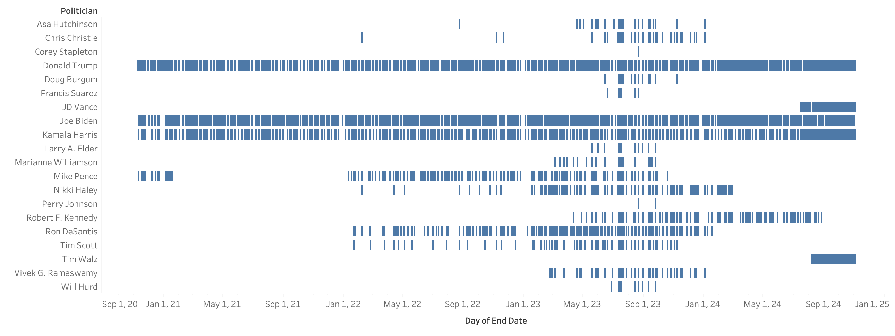
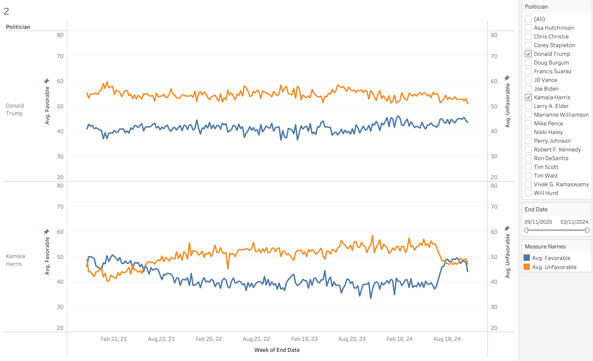
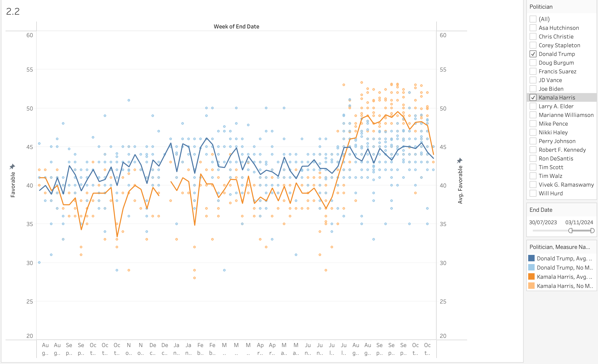
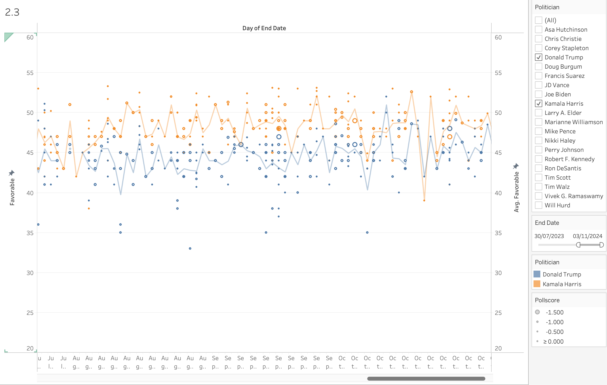
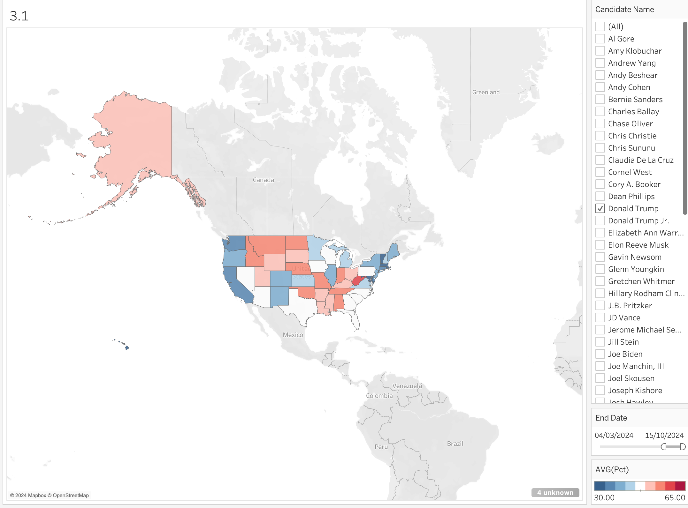

Objectifs du TP
- Découvrir Tableau Public
- Comprendre le mapping de données sur des marques graphiques (ligne, carré, ..) et leurs propriétés (taille, couleur, ..)
- Faire la distinction entre données brutes et abstraites, ainsi qu'entre dimensions et mesures
- Explorer un espace de conception de visualisation
Le TP se fait en binome. Répondre au questionnaire au fur et à mesure du TP.
Charger les données dans Tableau
Télécharger le csv suivant: favorability_polls.csv. Les données ont été collectée par 538, et sont disponibles sur kaggle.
Lancer Tableau et sélectionner connexion à un fichier texte, charger le
fichier. Si ce n'est pas fait automatiquement et basculer sur la vue des
données (en bas à gauche de Tableau cliquer sur
Source de données (Data Source)).
1.1 Voir les résultats sous forme de table
Basculer maintenant sur la 1e Feuille (Sheet 1). Commencer par
afficher une table avec les candidats (Politician) en
ligne, et le jour de fin de sondage (End Date) en colonne.
Afficher à l'intérieur de la table le gagnant de l'État en question pour
l'année donnée (State Winner). Pour ce faire, associer le
State Winner à une marque graphique, ou repère
(Mark).
Un aperçu du résultat attendu :

Sauvegarder et partager
Renommer votre feuille de calcul en double cliquant sur le titre de la visualisation, selon le numéro de l'exercice. Par exemple TPDataViz1.3.
Sauvegarder, créer un compte Tableau Public si ce n'est déjà fait.
Nommer votre classeur (Book) (qui contiendra une feuille par exercice)
avec le format suivant :
Lyon1-m2-2024-nom 1-numéro d'étudiant 1-nom 2-numéro d'étudiant 2.
Exemple: Lyon1-m2-2024-tabard-p231123-vuillemot-p2315189.
Mettre le lien vers de 1e feuille Tableau dans Tomuss
1 suite
1.2 Dupliquer la feuille avant de continuer pour conserver ce que vous avez déjà faudrait.
1.2 Ré-organiser la table (trier par ligne selon le nombre de sondage
effectué sur le candidat
Sort... (sur l'entête de ligne Politician) > by Field > Field Name
[Politician] > Aggregation [Count]
pour mieux voir sur qui les enquêtes de popularité ont été menées.
1.3 Changer la palette de couleur pour que les résultats inférieurs à 50% de vote favorable soit rouge et supérieur à 50 bleu

2.1 Vue globale et filtres
Nous allons maintenant regarder l'évolution des deux candidats
principaux. Commencer par mettre Politician en ligne, et
End Date en colonne, en aggrégeant par semaine. Rajouter
Favorable toujours en colonne pour voir l'évolution de la
perception des candidats, on affichera la moyenne sur une semaine.
Pour simplifier nous allons rajouter un filtre et ne garder que Trump et
Harris. Rajouter Politician dans la Filters, et
sélectionner ces deux candidats.
On va enfin rajouter le suivi des valeurs unfavorable au
cours du temps.

Les données peuvent varier selon les sondages nous allons maintenant afficher en complément des lignes, les valeurs de chaque sondage pour avoir une idée des données sous-jacentes.

Les sondages ont des qualités différentes, on va assigner une taille
variable selon le pollscore, plus ce dernier est faible
plus la taille du cercle sera grande, indiquant que le sondeur est a été
fiable dans le passé.

Pensez à mettre les liens vers chaque feuille dans le formulaire Tomuss
3. Carte
Créer un nouveau projet. Nous allons charger de nouvelles données qui contiennent plus de sondages. Ces données contiennent notamment des informations sur les états américains où ont été mené ces sondages.
Rajouter Longitude en colonne, Latitude en
ligne, ainsi que State en détail.
Pct indique les intentions de vote pour les candidats.
Rajouter un filtre pour ne garder que Trump et Harris. Rajouter un
filtre temporel basé sur End Date.
Ajuster la couleur pour montrer les "swing states", on considérera un
état comme tel si Trump ou Harris a des intentions de vote entre 45% et
50%.

4. Explorer d'autres représentations
Comme vu en cours, la représentation sous forme de carte ne représente pas forcément fidèlement les données.